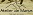

1 - Concepteur de ski Français
Voici une liste non exhaustive des fabriquants français de ski (et de snows):
 Akonite
AkoniteAllInWood
 Aluflex - Shapers Alpins
Aluflex - Shapers Alpins- Ame
 Amon Davà
Amon Davà- Atelier de Marius
- BlackSail
 Bohème
Bohème Brotherwood (spécialisé en snowboard)
Brotherwood (spécialisé en snowboard) Bumtrib
Bumtrib
 Bout de bois
Bout de bois Clone Ind
Clone Ind Deneriaz
Deneriaz DreamComesTrue
DreamComesTrue Easy (spécialisé en snowboard)
Easy (spécialisé en snowboard) Dupraz (spécialisé en snowboard)
Dupraz (spécialisé en snowboard) Fabrique du ski
Fabrique du ski Fond de Vallée
Fond de Vallée- Idriskis
 La Planche Mauriennaise
La Planche Mauriennaise
 Marcel-Livet
Marcel-Livet PLUM Ski
PLUM Ski Rabbit on the Roof
Rabbit on the Roof Rip'n'wud
Rip'n'wud Tardy
Tardy- Totem Ski
 Vandel (spécialisé en ski de fond)
Vandel (spécialisé en ski de fond) Villacampa-pyrenees
Villacampa-pyrenees Zag
Zag
Anciens valeureux du ski :

- Charly Carrere
- Desman
 Duret (spécialisé en monoski)
Duret (spécialisé en monoski)
- Fusta
VQuest
 White Doctor
White Doctor- (RIP Eric «Bob» Bobrowicz)